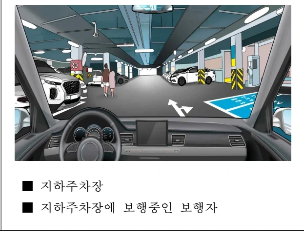

803. Which of the following are the safe ways to drive in the given situation? (Select TWO)

- ①Slow down as a pedestrian may suddenly appear from between the parked vehicles.
- ②Drive with caution as a parked vehicle may suddenly move.
- ③You can ignore the marking lines in an underground parking lot.
- ④Drive while paying attention only to the parking space you want.
- ⑤The pillars in an underground parking lot obstruct visibility, so continue honking while driving.
Show answer
Answer
① Slow down as a pedestrian may suddenly appear from between the parked vehicles.
② Drive with caution as a parked vehicle may suddenly move.
Reference
Risk is always potential. Risk prediction is predicting and preparing for potential risks. You must drive with caution in the underground parking lot as there may be different hazards from the road. Pedestrians may suddenly appear between parked vehicles, so you must drive slowly (①), and parked vehicles may start at unexpected moments, so you must drive with caution (②). Meanwhile, road markings must be observed (③). Only looking at a specific parking area (④) or continuously sounding the horn unnecessarily (⑤) are all unsafe driving methods. Therefore, the correct answers are ① and ②.
Reference text is a machine translation for study.